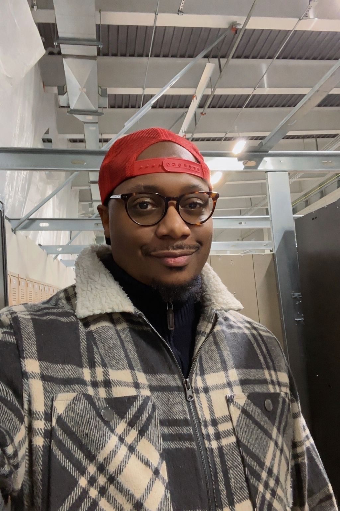
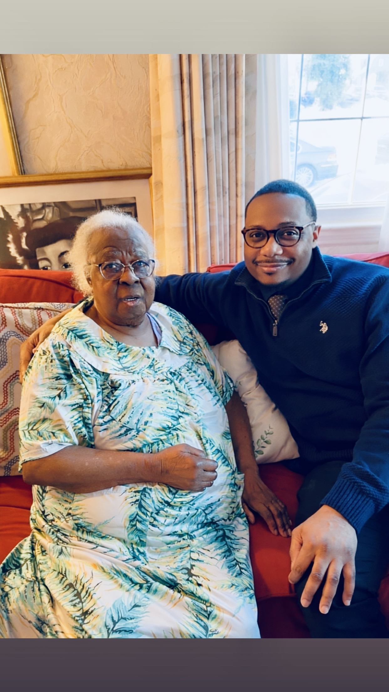

About
I work in food safety and quality assurance with a Bachelor's degree in Chemistry. My focus is on identifying failure modes, closing quality gaps, and building systems that prevent problems before they happen. I hold a PCQI certification and have worked across pharmaceutical, chemical, and food manufacturing environments.
My experience spans six core quality programs: Foreign Body Audit management across multiple production lines, Product Hold and disposition decision-making, Metal Detection program validation and investigation, Raw Material qualification and COA verification, Environmental Monitoring for pathogen control, and cross-shift Documentation Compliance.
I also write about Black American identity, consciousness, and fatherhood on Medium.
What I Do
Foreign Body Audit Program
Lead weekly audits across 11+ production areas. Track completion, score performance, assign coverage, and drive closeouts. Separate true foreign body risk from GMP/5S for accurate KPIs.
Product Hold Management
Manage holds from initiation through disposition. Coordinate investigations, rework plans, and release decisions. Work cross-functionally with production, maintenance, and lab teams.
Metal Detection Program
Oversee validation protocols, investigate hits, and coordinate vendor escalations. Conduct melt-down investigations to locate foreign material sources.
Environmental Monitoring
Collect and ship environmental swabs for EB, Salmonella, and Listeria testing. Coordinate with third-party labs (Merieux) for pathogen monitoring and COA tracking.
Raw Material Qualification
Verify Certificates of Analysis, coordinate with technology for material releases, and track vendor quality performance for ingredient safety.
Cross-Shift Compliance
Ensure RTO documentation compliance across shifts. Escalate missing paperwork and track corrections to maintain audit readiness and release timelines.
Life & Work

